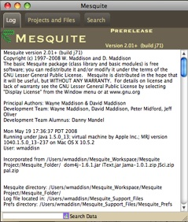
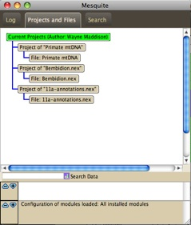
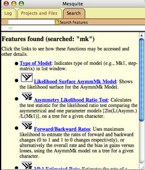
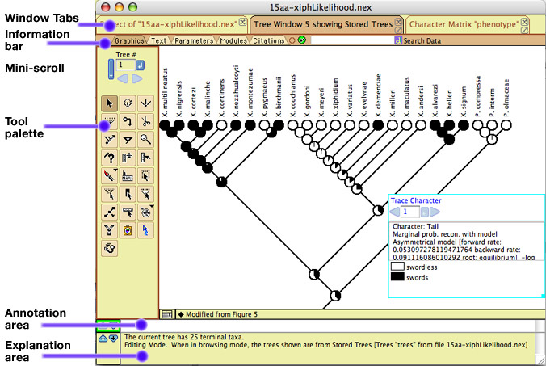
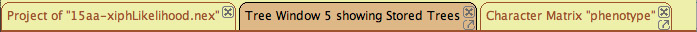
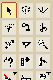
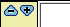
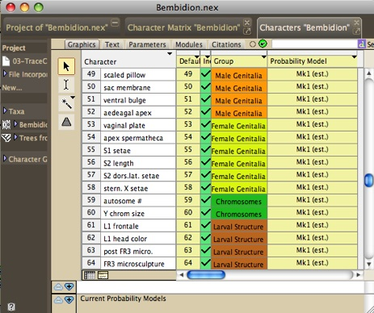

Mesquite's Windows
With version 2 of Mesquite, separate windows can be bundled together
as tabbed panels in the same window. Because most of these panels
can exist as separate windows, we will refer to them as "windows"
even though you may rarely see them as separate windows.
Some basic Mesquite windows are:
- Startup window - the colorful window with
the mesquite leaf, the progress bar indicating modules loading,
and the banners at right for installed and loaded packages.
- Main Mesquite window - this has three panels,
the Log Window, the Project and Files Window, and the Search
window. (See images below.)
- Tree Window - the
window to view and edit trees
- Character Matrix Editor
- a spreadsheet editor for character matrices
- List Windows -
show lists of characters, taxa, trees, models and other objects.
| Three panels of the main Mesquite window |
|  |
 |
 |
Log Window |
Project & Files Window |
Search Window |
|
On this page are explanations of the general features of windows,
as well as issues specific to list windows.
You can output a window by printing it, saving it as a PDF file,
or saving a text version. To print a window, select from the Print
menu items in the File Menu. You can also save the window as a
PDF document using Save Window as PDF, or save it as text using
Save Window as Text.
Common features of windows
Windows in Mesquite have a consistent structure, with these components
commonly appearing:

Here are brief descriptions of some of these:
Window Tabs
As noted above, windows can exist either separately or bundled
within a single window as tabbed panels. When bundled, the window
will have a series of tabs at the top that permit you to choose
which panel (i.e., which window) you want to see:
The tab that
shows dark is the current window shown.
Tabs can be closed using the  .
By touch this you are asking the window represented by the tab
to be closed.
.
By touch this you are asking the window represented by the tab
to be closed.
Windows can be "popped out" as independent windows
using the pop out button ().
A popped out window can be returned to being a tabbed panel within
the project window using the pop in button ( )
at the upper left of the popped out window.
)
at the upper left of the popped out window.
You can turn off window bundling by deselecting Open Windows
as Tabs in the Defaults submenu of the File menu.
Window information bar
Windows can have an information bar that allows you to access
information about the window, its calculations, and the modules
involved in them. If the information bar is not showing and you
wish to see it, select "Show Information bar"
in the Window menu.
The tabs in the information bar choose the different modes of
display of the window. The first two of these (the graphics tab,
and the text version tab), cause the window to display its basic
output (e.g., the spreadsheet data editor, the tree drawn in a
tree window) in either a graphics form or a textual form. The
remaining tabs give information of other sorts.
The window modes are:
- Grapical version of output — The standard output
of the window showing results and analyses.
- Textual version of output — A textual version
of the results and analyses.
- Parameters of modules — A list of the current
settings and parameters of the modules involved in producing
the window and its contained results.
- Tree of Modules — Shows the employee tree of all
modules participating in the window
- Citations for modules — Gives citations for some
of the modules participating in the window.
Mini scrolls
Mini scrolls are used to scroll among trees, characters and other
items. The small blue button right of the text edit box, when
hit, tells the scroll to enter and use the number within the edit
box. Otherwise you can use the arrows to scroll forward or back.
If the change is not acceptable (e.g., because you are already
at the minimum or maximum value) the arrow is dimmed.

Tool palettes
In various windows are tool palettes that look something like
this:

The button of the current tool is shown darker. Usually in the
explanation area of the window, an explanation is shown for a
tool when you click on it. Some tools (whose buttons may show
a small inverted triangle) when double clicked, right-clicked
or control-clicked, show a menu in which options can be chosen.
Annotation area
The white annotation area shows footnotes or other annotations
stored for taxa, trees, characters or other objects. These annotations
are sometimes editable. At its left are two buttons, a minus and
a plus arrow. These reduce and increase the height of the annotation
area.

Explanation area
The explanation area, below the annotation area, shows explanations
for tools, modules, objects in files, and so on. Its height can
be contolled by the minus and plus arrows.
List Windows
In the Characters and the Taxa&Trees menus are available
various windows that give lists of objects with information about
each, including the List of Characters and the List of Taxa Windows.
Other List Windows present lists of tree blocks, taxa blocks,
character matrices, character models, parsimony model sets, and
so on. These List Windows have a consistent interface: you can
select rows and columns, show and hide columns, and possibly rename
and delete objects.

At left of the List Window is a tool palette. The arrow
tool allows you to select columns or rows. The I-beam
tool allows you to edit the name of an object. The magic
wand tool selects all rows that have the same or similar
value in the column touched. The magic wand tool has alternative
selection criteria that can be chosen by clicking and holding
the cursor on the tool in the tool palette. The sort tool
reorders the objects listed according the column on which you
touch. Thus, if you touch on the leftmost column showing names,
the objects would be sorted alphabetically. If you touch on a
column showing a numerical result, the objects are sorted in ascending
or descending order of the number. The sort tool sorts in ascending
order by default, but by descending order if the option or ALT
key is held down.
Each List Window has a Columns menu, with which you can show
or hide columns. Some columns merely inform you of some quality
of the object. Others may represent analyses. For instance, the
column may show the value of some statistic for each of the characters
listed in the List of Characters window.
For some of the List Windows, you can ask to delete the objects
whose rows are selected by choosing "Delete Selected"
from the List menu.